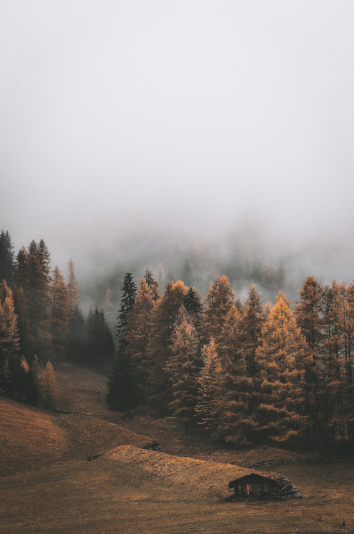
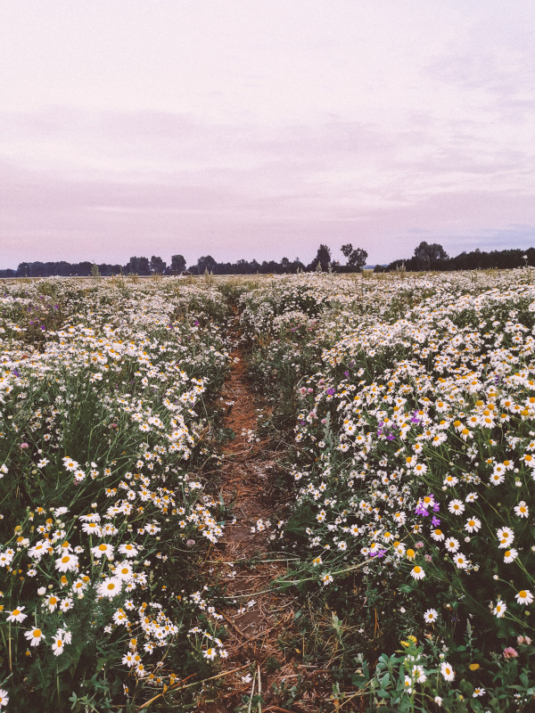

Conceito Natureza
A ideia de “natureza” está no cerne da ciência, considerada como seu carro-chefe e elo mais profundo com as sociedades humanas. No entanto, embora a preservação da natureza tenha se tornado uma grande preocupação social, o conceito permanece indefinido.
Conhecendo as Estações
Verão
Apresenta temperaturas elevadas e dias mais longos que as noites. Nesse período, há aumento dos índices pluviométricos. Essa estação do ano sucede a primavera e antecede o outono.
Outono
É considerado um período de transição e caracteriza-se pelo declínio das temperaturas, com exceção das regiões que se localizam próximo ao Equador. Nesse período, as folhas das árvores apresentam tons amarelados e costumam cair, indicando mudança de estação.
Inverno
Caracteriza-se pela queda das temperaturas e, em alguns lugares do Hemisfério Sul, pela ocorrência de geadas e nevascas. Apresenta dias mais curtos e noite mais longas em decorrência da menor incidência solar. Nesse período, ocorrem migrações de diversas espécies de animais para áreas com temperaturas mais elevadas.
Primavera
Apresenta temperaturas amenas e agradáveis e aumento dos índices pluviométricos. Os dias começam a ficar mais longos, e as noites passam a ser mais curtas. A característica principal dessa estação é reflorescimento da flora terrestre.